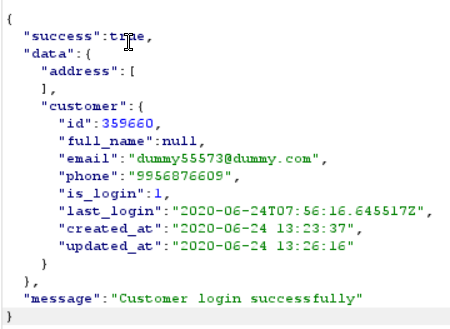

Account Takeover (User Id)
- Mapping users as per uid, gid and and other params like user_id, user=, etc is good practice
- Untill proper checks and access control is in place
- Logging into other users account by just using their userId's
- Example 1
- Visit https://wforwoman.com/
- Login with proper credentials
- Now Logout and login again but this time start BurpSuit
- This time again give correct OTP but intecept the response
-
- We Do changes(id) in intercepted response
- 

- And we are in someone elses account

Example 2- Visit https://www.misrii.com/
- Make proper account
- Now Login again with correct OTP but Intercept it with BurpSuit
- Intersept the response
- Make changes in uid of response